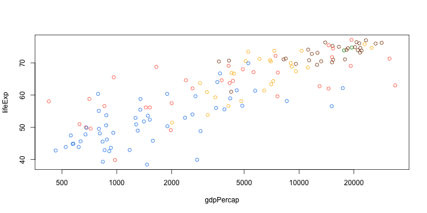
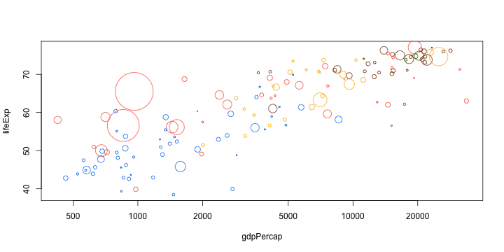
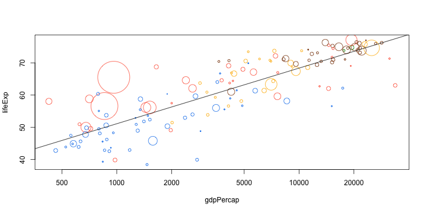
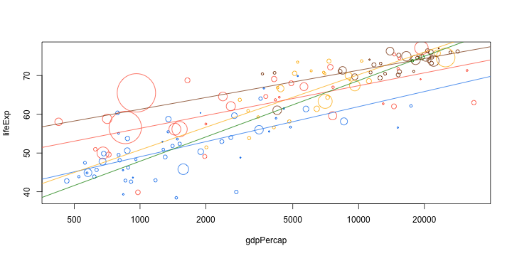

One of the best parts of R is its plotting capabilities. Most model output has an associated plot method which allows one to quickly visualize the results of an analysis using a consistent interface.
In this lesson, we will learn about base graphics, which is the oldest graphics system in R. Although higher-level graphics packages like lattice and ggplot2, which are built on grid graphics have displaced base graphics, I still believe that the flexibility of base graphics can come very handy.
We will use the gapminder dataset.
gapminder <- read.csv('data/gapminder.csv', stringsAsFactors = F)
gapminder_1982 <- subset(gapminder, year == 1982)
plot(lifeExp ~ gdpPercap, data = gapminder_1982, log = "x")
mycol <- c(Asia = "tomato", Europe = "chocolate4", Africa = "dodgerblue2",
Americas = "darkgoldenrod1", Oceania = "green4"
)
plot(lifeExp ~ gdpPercap, data = gapminder_1982, log = "x",
col = mycol[continent]
)

#' Scale a transformed variable to a given range
#'
#' @param var variable to scale
#' @param f function to transform var before scaling
#' @param r range to which variable should be scaled
#'
#' @example
#' x = rnorm(10)
#' mycex(x, square, c(1, 10))
mycex <- function(var, r, f = sqrt){
x = f(var)
x_scaled = (x - min(x))/(max(x) - min(x))
r[1] + x_scaled * (r[2] - r[1])
}
plot(lifeExp ~ gdpPercap, data = gapminder_1982, log = "x",
col = mycol[continent],
cex = mycex(pop, r = c(0.2, 10))
)

trend <- lm(lifeExp ~ log10(gdpPercap), data = gapminder_1982)
plot(lifeExp ~ gdpPercap, data = gapminder_1982, log = "x",
col = mycol[continent],
cex = mycex(pop, r = c(0.2, 10))
)
abline(trend)

plot(lifeExp ~ gdpPercap, data = gapminder_1982, log = "x",
col = mycol[continent],
cex = mycex(pop, r = c(0.2, 10))
)
library(plyr)
d_ply(gapminder_1982, .(continent), function(d){
trend <- lm(lifeExp ~ log10(gdpPercap), data = d)
abline(trend, col = mycol[d$continent[1]])
})
